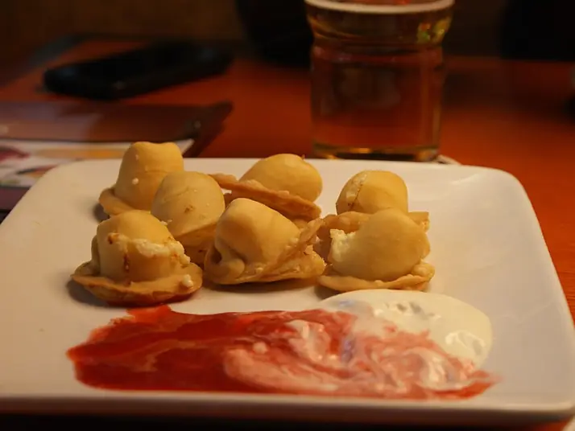

Фото: Хомелка, CC BY-SA 3.0

Колдуны
Белорусские картофельные оладьи с мясной начинкой внутри
70 мин4 порц.781 ккал на порциюБ 26 · Ж 52 · У 53Украинская кухня
Продукты на 4 порц.
- Картофель8 шт
- Лук репчатый2 шт
- Яйцо куриное1 шт
- Мука пшеничная1,5 ст. л.
- Соль2 ч. л.
- Фарш свино-говяжий400 г
- Перец чёрный молотый0,5 ч. л.
- Растительное масло5 ст. л.
- Вода0,5 стак.
- Сметана 20%6 ст. л.
Как готовить
- Натрите картофель на мелкой тёрке и отожмите через марлю. Сок отстоите 5 минут, слейте воду, а осевший крахмал верните в картофель.
- Добавьте в картофель половину тёртого лука, яйцо, муку и 1 ч. л. соли, перемешайте.
- Для начинки смешайте фарш со второй половиной лука, солью и перцем.
- Разогрейте масло в сковороде на среднем огне. Выложите ложку картофельной массы, разровняйте, сверху 1 ч. л. фарша и накройте ещё ложкой картофеля, прижав края.
- Жарьте по 4-5 минут с каждой стороны до золотистой корочки.
- Сложите колдуны в сотейник, влейте горячую воду, накройте и тушите на слабом огне 10 минут, чтобы фарш внутри дошёл. Подавайте со сметаной.
Совет. Колдуны отличаются от драников начинкой и дотушиванием: без последнего шага мясо внутри может остаться сырым. Тёртый картофель темнеет быстро, жарьте сразу после приготовления массы.